Руководство врача
Как завести пациента, назначить ему тест слуха, посмотреть результаты и разобрать ответы по каждому звуку.
Платформа теперь называется Платформа TNOISE — раньше «Платформа тестирования слуха». Вместе с ней сменили названия приложения: ваше приложение теперь TNOISE — приложение врача, приложение пациента — просто TNOISE. Поменялись только названия: адрес входа, логин, пароль и все ваши данные остались прежними.
1 С чего начать
Платформа состоит из двух приложений. Пациент проходит тесты в мобильном приложении на своём телефоне: слушает звуки в наушниках и на каждый отвечает «Слышу» или «Не слышу». Вы работаете в приложении врача — оно открывается в браузере, устанавливать ничего не нужно.
Ваша обычная работа выглядит так:
- Завести пациента и выдать ему логин и пароль.
- Назначить ему один или несколько тестов.
- Дождаться, пока пациент пройдёт их в своём приложении.
- Посмотреть результат, разобрать ошибки по конкретным звукам.
Компьютер с браузером (Chrome, Яндекс.Браузер, Firefox, Safari) и адрес, выданный администратором. Логин и пароль врача тоже выдаёт администратор — самостоятельно зарегистрироваться нельзя.
2 Вход в систему
Откройте адрес платформы — вы попадёте на страницу входа.
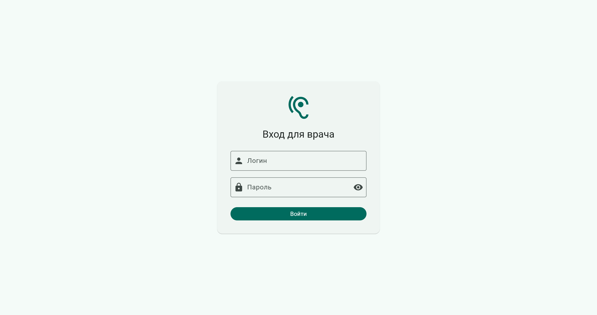
- Введите логин и пароль, которые вам выдали.
- Нажмите Войти (или клавишу Enter).
Пароль скрыт точками — чтобы проверить, что вы его набрали правильно, нажмите значок глаза справа в поле. Если система пишет об ошибке входа, проверьте раскладку клавиатуры и регистр букв; если не помогает — обратитесь к администратору.
Чтобы выйти, нажмите значок выхода в правом верхнем углу главной страницы. Повторно вводить пароль при каждом открытии браузера не нужно — вход сохраняется.
3 Главная страница
После входа открывается главная страница. Она отвечает на вопрос «что требует моего внимания прямо сейчас».
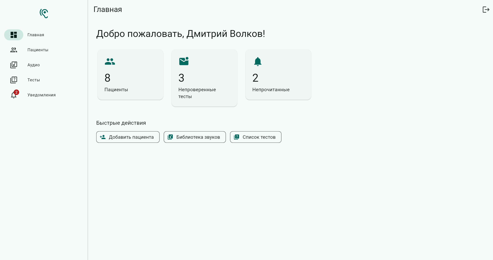
| Счётчик | Что означает |
|---|---|
| Пациенты | Сколько пациентов сейчас закреплено за вами. |
| Непроверенные тесты | Пациенты прошли эти тесты, а вы результат ещё не открывали. |
| Непрочитанные | Новые уведомления. |
Все три плитки кликабельны. Слева — постоянное меню: Главная, Пациенты, Аудио, Тесты, Уведомления. Красный кружок на колокольчике показывает число непрочитанных уведомлений.
4 Список пациентов
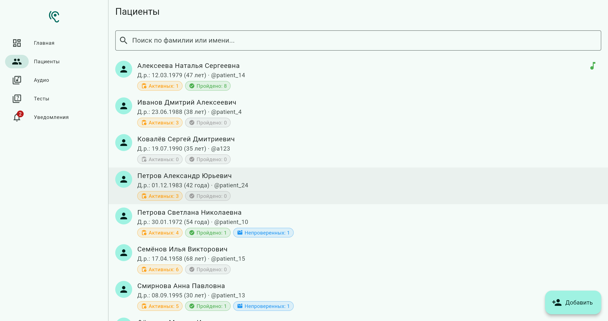
Под именем каждого пациента — дата рождения, возраст, логин и бейджи:
- Активных — тесты назначены, но пациент их ещё не прошёл.
- Пройдено — сколько тестов пациент завершил.
- Непроверенных — пациент прошёл тест, а вы результат ещё не смотрели. Бейдж исчезнет сам, как только вы откроете карточку пациента.
Поле сверху ищет по фамилии или имени — начните печатать, список сузится. Значок ноты справа означает, что пациенту задан стартовый звук (см. Карточка пациента).
Нажмите на строку, чтобы открыть карточку пациента.
5 Добавление пациента
Нажмите кнопку Добавить в правом нижнем углу списка пациентов.
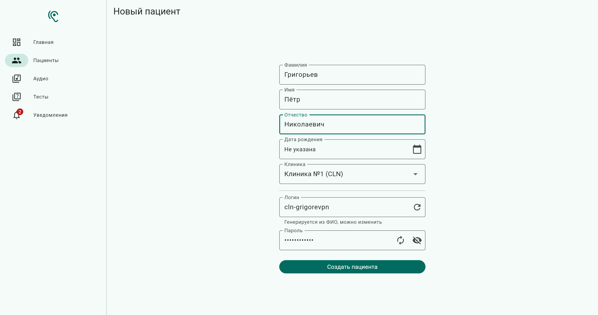
- Заполните фамилию, имя, отчество.
- Укажите дату рождения — она нужна, чтобы отличать однофамильцев.
- Выберите клинику из списка.
- Логин и пароль система придумает сама. Логин появится в поле через пару секунд после ввода ФИО. Если хотите — впишите свои значения или нажмите «Сгенерировать» ещё раз.
- Нажмите Создать.
Данные для входа пациента
Сразу после создания откроется окно с логином и паролем пациента.
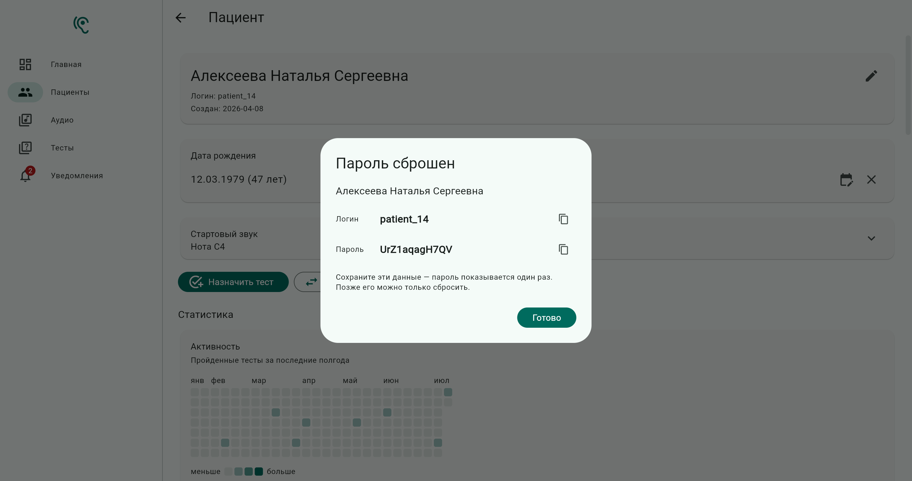
Закрыв это окно, посмотреть пароль уже не получится — ни вам, ни администратору. Скопируйте его и передайте пациенту сразу. Если пароль всё же потерян, это не страшно: откройте карточку пациента и нажмите Сбросить пароль — система выдаст новый.
Пациент вводит эти логин и пароль в мобильном приложении один раз, после чего приложение запоминает его устройство.
6 Карточка пациента
Это главный экран в вашей работе. Здесь всё о пациенте: его данные, статистика, назначенные тесты и результаты.
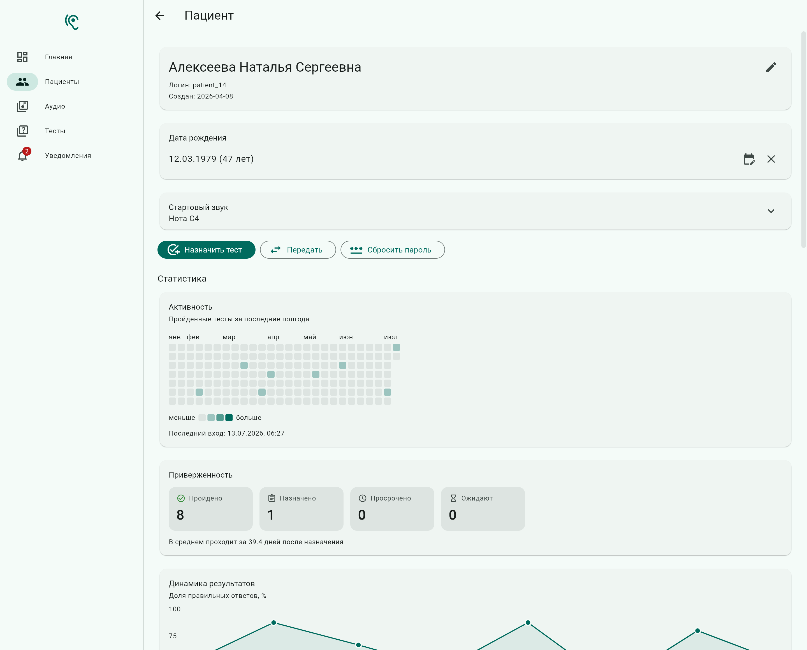
Что можно изменить
- ФИО — значок карандаша справа вверху.
- Дата рождения — значок календаря; крестик рядом очищает дату.
- Стартовый звук — звук, который пациент слышит первым, когда открывает тест: он помогает настроить громкость на телефоне.
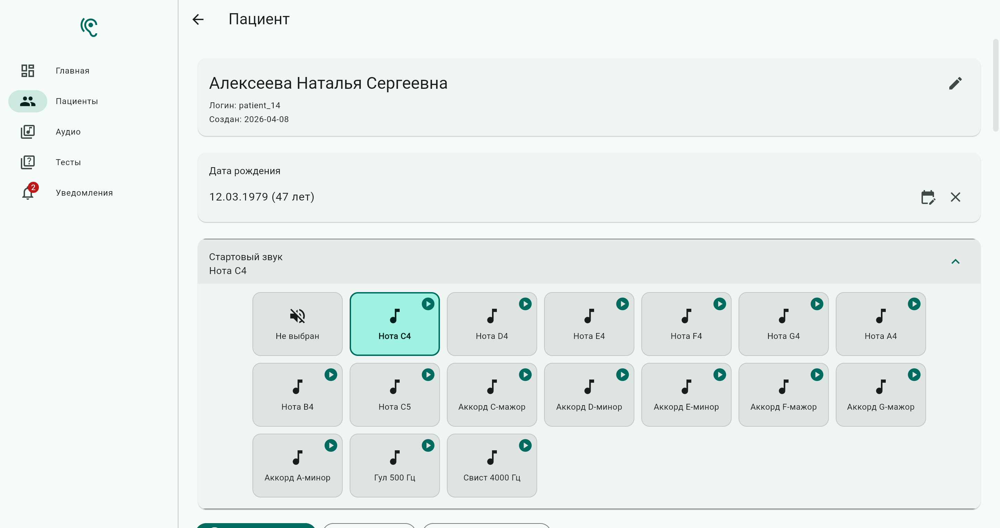
Три кнопки действий
Назначить тест — описано в следующем разделе.
Передать — отдать пациента другому врачу. Выберите врача из списка и подтвердите. После этого пациент пропадёт из вашего списка и появится у коллеги; он получит уведомление. Вся история тестов сохранится.
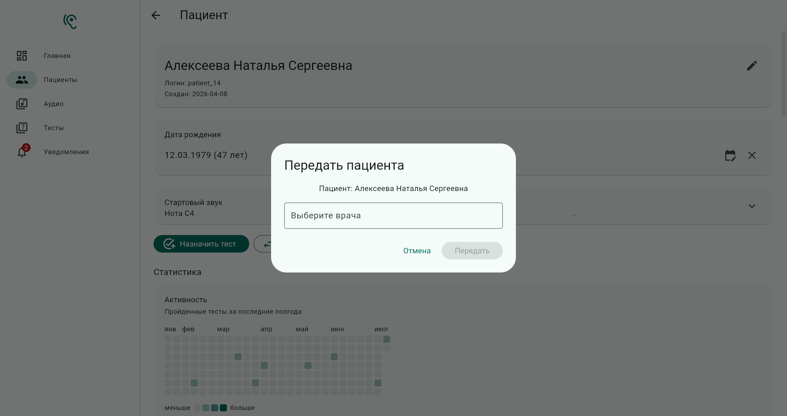
Сбросить пароль — если пациент забыл пароль. Система подтвердит действие, затем покажет новый пароль в таком же окне, как при создании пациента.
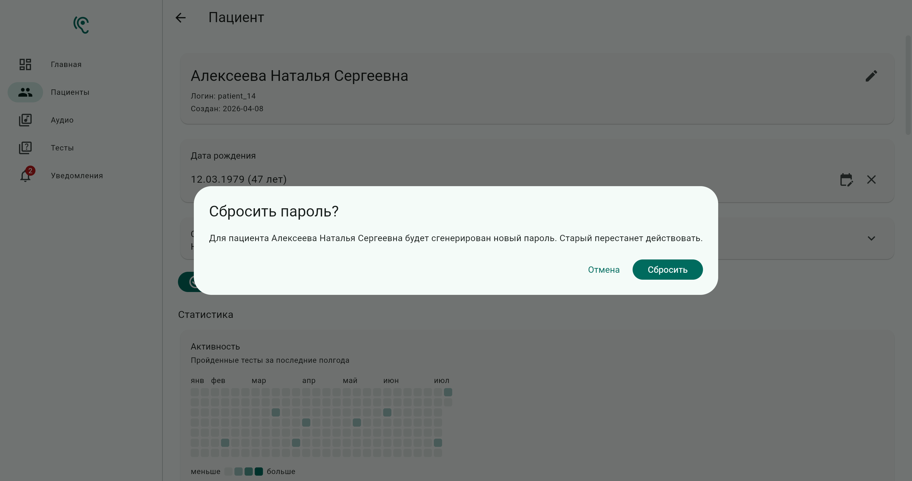
После сброса пациент не сможет войти со старым паролем — обязательно передайте ему новый.
7 Назначение теста
В карточке пациента нажмите Назначить тест, выберите тест из списка и подтвердите. Рядом с названием показано, сколько в тесте звуков.
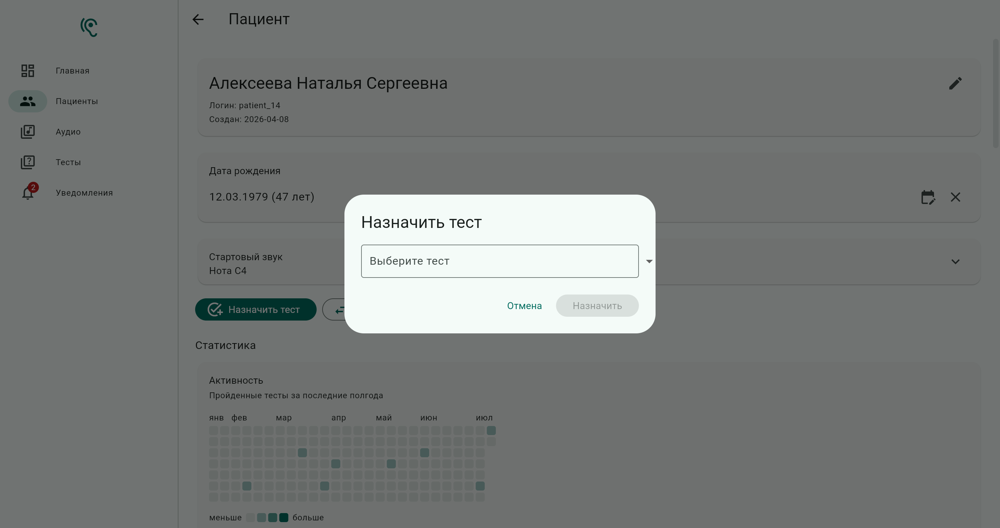
Назначенный тест сразу появится в приложении пациента — в разделе Назначенные тесты его карточки. Пока пациент его не прошёл, тест можно раскрыть (стрелочка справа), послушать входящие в него звуки или снять назначение.
Повторно пройти уже завершённый тест пациент не может, а результат нельзя изменить или удалить. Если нужно измерить динамику — назначьте тест ещё раз (он появится как новое назначение) или создайте новый.
Если пациент долго не проходит назначенный тест, назначение помечается как Просрочено и попадает в статистику приверженности.
8 Результаты и разбор ответов
Пройденные тесты собраны в разделе Результаты внизу карточки пациента: название теста, набранные баллы и дата прохождения.
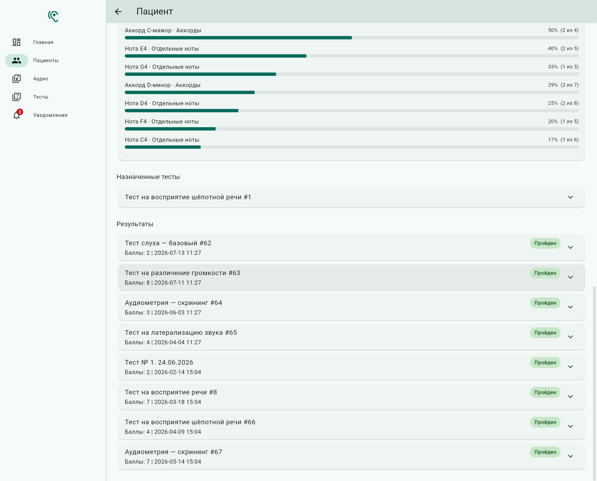
Нажмите на строку результата, чтобы раскрыть разбор по каждому вопросу.
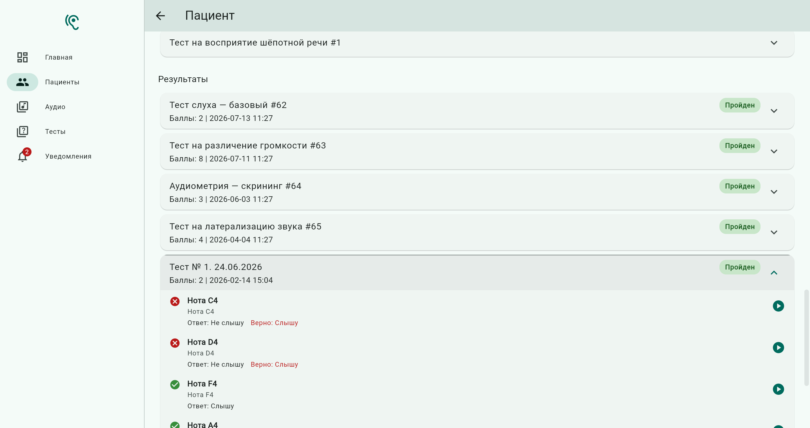
- Для каждого звука видно, что ответил пациент: Слышу или Не слышу.
- Если пациент ошибся, красным дописывается правильный ответ («Верно: Слышу»).
- Значок ▶ справа проигрывает тот самый звук — вы слышите ровно то, что слышал пациент.
Как только вы открыли карточку пациента, его результаты считаются просмотренными, и счётчик «Непроверенные тесты» на главной уменьшается.
9 Статистика пациента
В карточке пациента есть четыре блока статистики.
Активность
Календарь пройденных тестов за последние полгода: чем темнее квадратик, тем больше тестов пройдено в этот день. Сразу видно, занимается пациент регулярно или вспоминает о тестах раз в месяц. Ниже — дата последнего выхода приложения на связь. Календарь и блок «Приверженность» показаны на скриншоте в разделе Карточка пациента.
Приверженность
Четыре числа: сколько тестов пройдено, сколько сейчас назначено, сколько просрочено и сколько ожидают. Отдельной строкой — за сколько дней в среднем пациент проходит тест после назначения.
Динамика результатов и ошибки по звукам
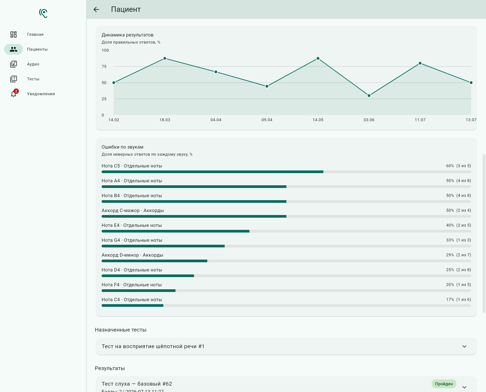
- Динамика результатов — доля правильных ответов (в процентах) по датам. Линия вверх — пациенту становится лучше. Наведите курсор на точку, чтобы увидеть название теста и счёт.
- Ошибки по звукам — по каждому звуку доля неверных ответов; самые проблемные звуки наверху. Например, «Нота C5 · 60% (3 из 5)» означает, что из пяти предъявлений этого звука пациент ошибся трижды. Это и есть главная клиническая находка: видно не «плохо в целом», а какие именно звуки пациент не слышит.
10 Библиотека звуков
Раздел Аудио — все звуки, из которых собираются тесты. Слева дерево категорий (у категории могут быть подкатегории), справа — звуки выбранной категории. Пункт «Все» показывает всю библиотеку целиком.
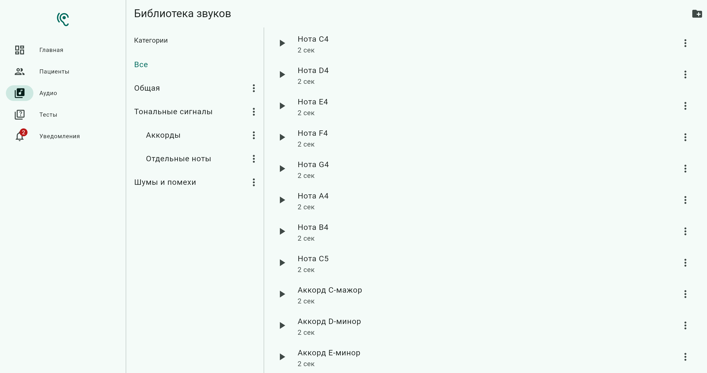
- Значок ▶ слева от названия — прослушать звук.
- Три точки справа от звука — переместить его в другую категорию.
- Три точки у категории — переименовать, добавить подкатегорию или удалить. При удалении категории звуки не пропадают — они переезжают в общий список.
- Кнопка «+» в правом верхнем углу создаёт новую категорию.
Новые аудиофайлы добавляет администратор. Вы можете наводить порядок: раскладывать звуки по категориям, переименовывать категории, слушать записи.
11 Тесты: список и создание
Раздел Тесты — все тесты, доступные для назначения. У каждого видно название, описание и количество вопросов; раскрыв строку, можно послушать входящие в тест звуки.
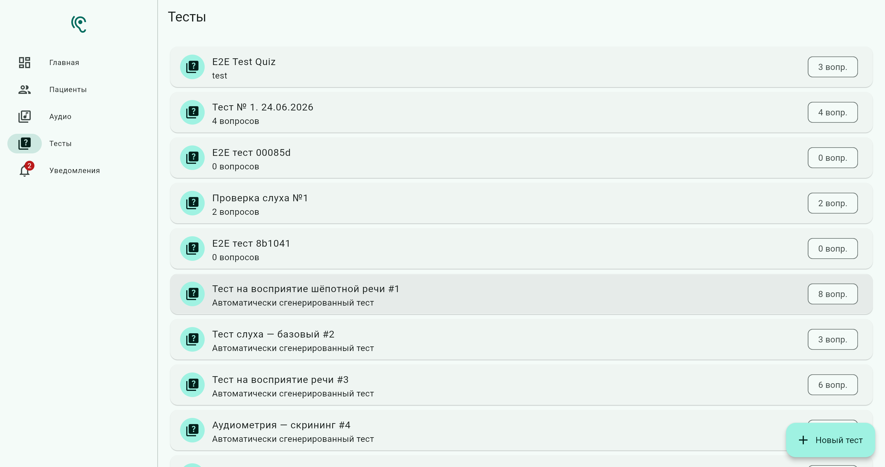
Создать свой тест
Нажмите Новый тест в правом нижнем углу.
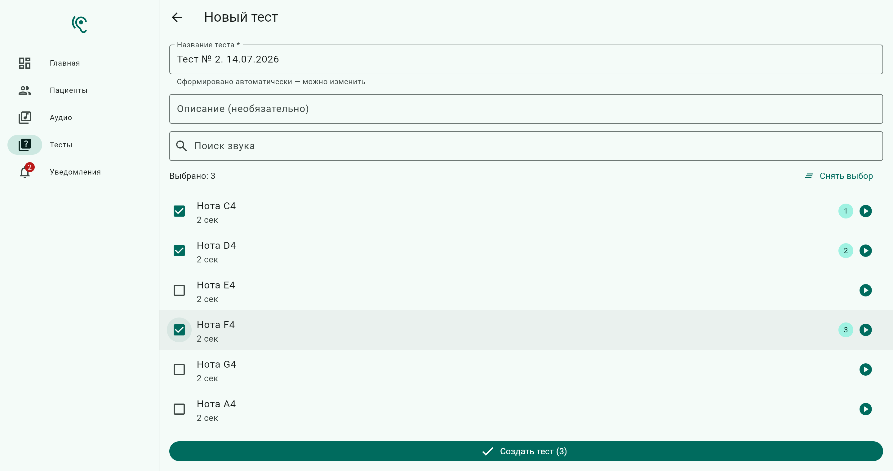
- Название уже заполнено («Тест № 2. 14.07.2026») — можно оставить как есть или написать своё, понятное вам.
- Описание заполнять не обязательно.
- Отметьте галочками нужные звуки. Поле Поиск звука помогает найти их по названию, значок ▶ — прослушать.
- Нажмите Создать тест.
Звуки пойдут в тесте в том порядке, в котором вы их отметили, — номер показан в кружке справа. Чтобы начать заново, нажмите «Снять выбор».
Готовый тест сразу появится в общем списке, и его можно назначать пациентам. По каждому звуку пациенту задаётся вопрос «слышите ли вы этот звук», и правильным ответом по умолчанию считается «Слышу».
12 Уведомления
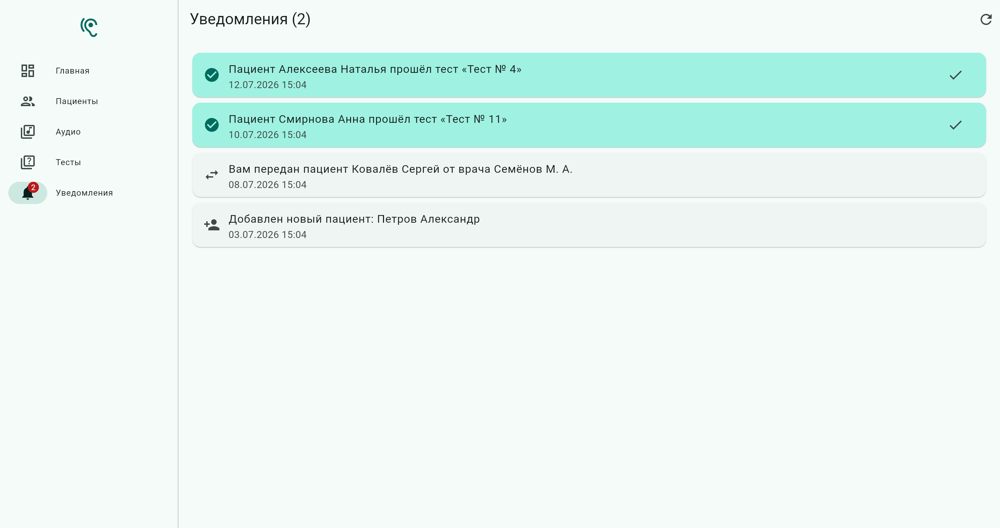
Система сообщает вам о трёх событиях:
- Пациент прошёл тест — можно идти смотреть результат.
- Вам передан пациент — коллега перевёл пациента к вам.
- Добавлен новый пациент.
Галочка справа отмечает уведомление прочитанным, счётчик на колокольчике уменьшается. Список обновляется сам, перезагружать страницу не нужно.
13 Частые вопросы
Пациент забыл пароль
Откройте его карточку → Сбросить пароль → передайте пациенту новый. Старый перестанет работать.
Пациент говорит, что не видит назначенный тест
Проверьте, что тест виден в разделе «Назначенные тесты» его карточки. Если он там есть, попросите пациента обновить список в приложении (потянуть экран вниз) и убедиться, что телефон подключён к интернету.
Я ошибся и назначил не тот тест
Пока пациент его не прошёл, раскройте назначение в карточке и нажмите Снять. Если тест уже пройден, снять его нельзя — результат неизменяем; просто назначьте нужный тест дополнительно.
Можно ли удалить результат или исправить ответ?
Нет. Результаты неизменяемы — это защита медицинских данных от случайных правок.
Звук в библиотеке не проигрывается
Скорее всего, к записи не приложен аудиофайл. Сообщите администратору название звука — файл нужно загрузить через административную панель.
Как выйти из системы?
Значок выхода в правом верхнем углу главной страницы.
Куда обращаться, если что-то не работает
К администратору платформы. Полезно сразу сообщить: что вы делали, какого пациента открывали и что увидели на экране.